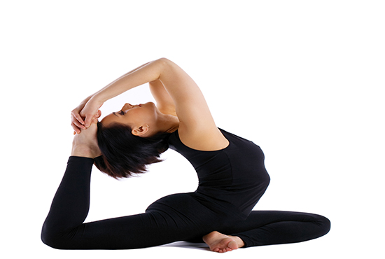

问：怎样强化四“丫”作为第二心脏的训练理念与训练方法？
答：中国是一个拥有三山五岳与众多山峦的国度。我们的祖先一直喜爱爬山。现在时髦了，叫登山，又叫越野行走。举国民众对爬山的忠心耿耿在几个长假中表现得淋漓尽致。但是，无论是在黄山、泰山还是武当山、峨眉山，只要是有外国人出现并一起爬山的地方，就会看到一个普遍的现象：不论是欧美人还是亚裔韩日人，几乎个个穿登山服持登山杖。中国人持登山杖的却凤毛鳞爪，但保护关节的意识还是蛮强的，那些卖各种各样爬山棍棍的可火了。
但是，到了第二天感觉却大不相同。持登山杖的几乎没有膝关节踝关节于登山后特有的关节与腓肠肌的疼痛反应。持登山棍棍的就会有疼痛反应。什么也没有持的最惨，几乎就疼得走不了路啦。这是因为持登山杖才是真正的四“丫”爬山，才能真正科学抵抗直立后的人因爬山导致的关节与肌肉承重应力的伤害。
人的膝关节是所有关节中面积最大的关节，是承应体重的主力。人类由爬行进化为直立行走后，由于地心引力的作用，上山时人体体重对膝关节的应力增加了3-4倍，此应力使髌骨、半月板、关节面软骨摩擦加剧，易对膝关节产生较大磨损伤害。俗话说，上山容易下山难。下山时，膝关节应力最高可达体重的6倍甚至7倍，膝关节处于交替屈膝负重状态，关节横向位移明显，极易损伤支持韧带，产生细小纤维断裂和毛细血管出血。表现为膝内侧或外侧疼痛。下山屈膝时膝关节极不稳定，如果受到侧向外力或滑动，常会感到重心不稳。“撑”不住了，严重者可扭伤膝关节，造成半月板损伤。表现为关节内剧烈疼痛，不能屈伸活动，还会合并关节囊损伤致关节肿胀。因此，关节外科专家会常常提醒，不要爬山不要爬楼了。最近，就有不持手杖爬山20年的才40多岁的患者，膝关节软骨全部磨没了，只能换人工关节了。
但是，在发达国家，体育人口体育家庭普及，运动健康科普更加普及，运动场地器械与运动保护更加人文更加科学，爬山持登山杖早已普及。
为了对抗中国人的“爬山病”，国家体育总局科学研究所的科研人员，从北欧滑雪手杖进化的越野行走手杖中得到循证，号召国民使用越野行走手杖爬山。使用手杖行走或爬山，能使单纯的下肢运动变为四肢运动，最大限度地拓展直立状态下的四“丫”爬行状态。抓在手“丫”中的手杖，将手对地球引力的抵抗延伸到地面，既达到上下肢的大肌肉群与四“丫”经络穴位同时锻炼的目的，又减轻了膝关节的应力负荷与磨损伤害。爬山时使用登山杖可以减轻至少22%膝关节与腿部肌肉应力，降低30%体能消耗。我们先可在平路行走时训练加持手杖，掌握节奏后，可大步流星，加持运动量，达到中等强度有氧代谢运动效果时，会感到微循环一阵一阵海涛般冲刷血管的力量。在训练加持手杖登山后，由于有了上肢的延长用力，反而可以节省能量，降低运动强度，避免爬山者心肺负荷过量。更由于手杖延伸了上肢支点，增加了支撑力与平衡力，脚丫抓地更加稳固有劲儿，可避免摔倒滑倒，使爬山者更加安全更加自信，其得到微循环海涛动力也会更加明显更加持久。
体育专家还建议使用“避震”登山杖，以缓冲下山支撑应力，更科学地对抗脚踝膝及腰椎的冲击。下山时，应将“避震”手杖放长。先用杖支撑前面的路，两个手延长变成两条腿，好比四腿四“丫”并举，关键是力量用到位，震力可均匀分担在手腕和手臂上，以减少腕臂疲劳损伤。
总之，持登山杖爬山是强化四“丫”作为第二心脏的训练理念与训练方法的“动”的科学举措。我们还有许多好“静”的人，还有不擅长运动或体质柔弱或身体柔韧度不够好的人，则可以练练手指瑜伽。我们的每根手指与身体各大器官相通，蕴含着巨大的能量。手部有6条经脉循行，与全身各脏腑、组织、器官沟通，约有99个穴位区域折射全身五脏六腑健康状况。如拇指折射心脏和肺脏，食指折射胃肠和消化器官，中指折射肝脏和五官，无名指折射肺泡和呼吸系统，小指折射肾脏和循环系统。
手指瑜伽可提高心脏机能，促进血液循环，激活唤醒肌肉与内脏的潜能，还可改善怕冷体质与高血压等。医学实验用CT循证手指瑜伽实验者前后心脏功能，其结果证实被实验者每分钟心率从53增加至100次（心率100次相当于慢跑10分钟），血流量也大大增加。
结一手印，若手中绽放一朵莲花，舒畅放松感由指尖传至全身，即手指瑜伽。此时，气沉丹田，全身正、静、松、沉，眼睑微闭，空性冥想，默默祈祷。手指瑜伽通过释放个人能量自我治愈。通过创造内心平静，协调肉体与灵魂的静态动态平衡。
手指瑜伽有三个主要的手印：
手指瑜伽的“智慧手印”是将拇指和食指轻轻相扣，其他三指自然伸展。这一手印代表将自身的能量和宇宙的能量融合在一起，可平静焦虑，恢复记忆，治疗失眠、抑郁、昏睡等。
手指瑜伽的“明目手印”是将食指和无名指的指尖一起扣于拇指指尖之上，用力相接，其余手指自由伸展，可改善血液循环，清肝明目，治疗静脉阻塞等。
手指瑜伽的“强心手印”是弯曲食指，按压掌丘，小指竖立；然后将中指和无名指指尖扣于拇指指尖之上，用力相接。可强化心脏射血，缓解各种心脏病急症引发的不适、恢复血压正常、调节月经、净化全身血液等。
还有一种特别简便易行且有效的健心健脑健骨的“敲打脚尖”，可躺在床上与手指瑜伽同时做，有立竿见影的效果。是真正的强化四“丫”作为第二心脏的训练理念与训练方法的完美结合。如我们平躺于床，全身放松，微闭双眼，腹式呼吸。将食指尽量弯曲后，下探紧贴拇指下端手掌的鱼际部位，再将拇指指尖紧贴中指无名指指尖，余下的小指尽量向外向后伸展——这是一个强心手印。然后开始不停地敲打脚尖。敲打脚尖可双脚跟并拢，整个脚的跟部至脚尖部亲密接触般地不停撞击，脚尖可伸直，也可蜷起来。敲打脚尖更可以双脚后跟离开，专门敲打脚尖。如有拇外翻，还可专门敲打拇外翻的部位。敲打脚尖可设定时间计数，不快不慢情况下，10分钟可以做1200次左右。手指瑜伽和敲打脚尖最佳效果是躺着做。但我们也可见缝插针，我们坐着看电视的时候，敲3000次左右效果最好。可在看“新闻联播”时，边看边做。
我们全身有12 条正经与任督二脉，万病皆由14经络与全身微循环的瘀滞与不通引起。
12经脉有6条起止于脚，66个穴位是在脚上。我们的脚丫不停地敲打，就像扯起了经络穴位的经幡，鼓起了微循环海涛作用的士气，加上我们的手指瑜伽，全身就像进行着一场活血化瘀吐故纳新的总动员总进攻，且气场大动静小，投入小效果好。
我们一旦进入手指瑜伽与敲打脚尖的四“丫”行动，马上会进入一种身心愉悦的境界，大脑会在领略神清气爽的同时，迅速分泌“内啡肽”，越敲越欢快，越敲越想敲，越敲越舒服。每天早晨睡醒后，不用自己提醒，潜意识的快乐舒服就会自动开启手指瑜伽与敲打脚尖的四“丫”行动。
做手指瑜伽与敲打脚尖时，首先，会有明显的四“丫”温暖的感觉，会有全身传导瑜伽与敲打脚尖的电流感。会有心脏与全身骨骼的低频震动感。骨骼低频震动感对骨骼存钙及防治骨质疏松十分有效，因为我们人类有206块骨头，其中有106块都在手上与足上。敲打脚尖时，能明显感觉到全身血流加速，微循环畅通，心区脑区舒服，骨头及四肢有劲。对拇外翻的患者也会因为敲击时的疼痛感感到舒服。
做手指瑜伽与敲打脚尖一段时间后，手足冰凉会消失，睡眠会明显改善，夜尿会减少。眼睛会有明亮感，视力会有所好转。脑子会对疲劳加快恢复，记忆力会增强。能暂时或延时平复焦虑、烦躁、忧伤等负面情绪。
做手指瑜伽与敲打脚尖必须配合深呼吸即腹式呼吸，在空气清新的房间或场地做功更佳。
其实运动没有必要做很多种，只要持之以恒地坚持某一项运动，就一定会得到其所带来的效果。我们每个人都是这个世界上的唯一，我们每个人都应潜心研究思辨最符合自己个性的运动方向和训练方式。
愿“四丫——第二心脏”的理念与训练方法，进一步推进修瑞娟的“微循环海涛理论”在民间的普及。
推荐阅读：